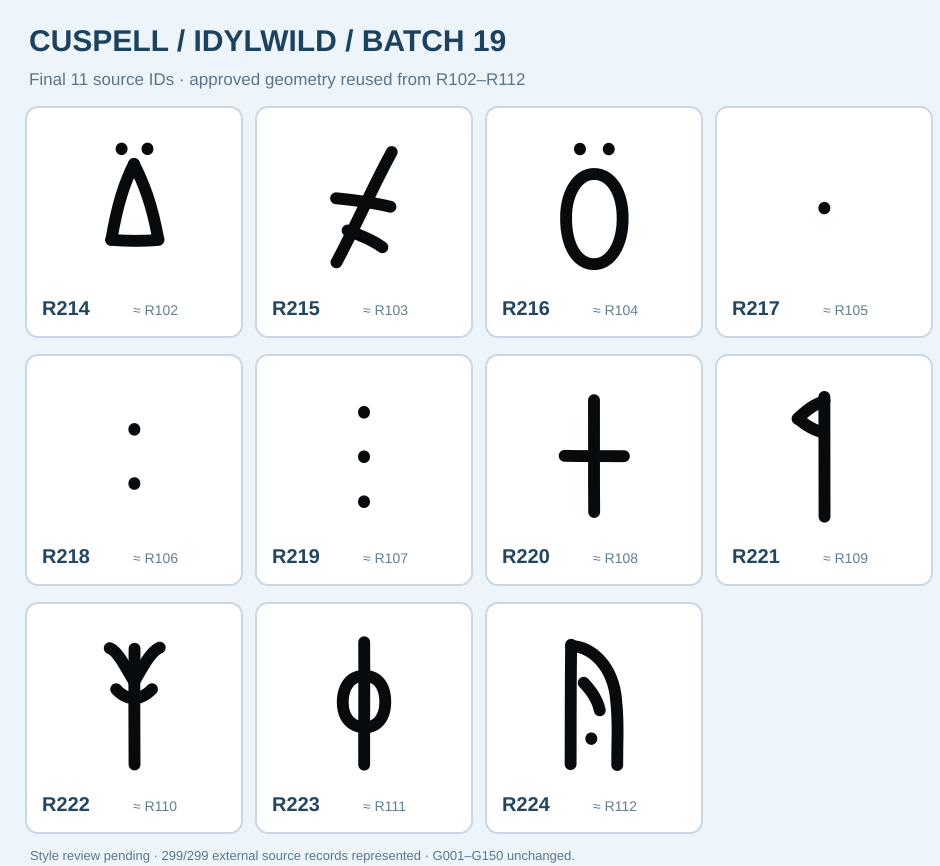
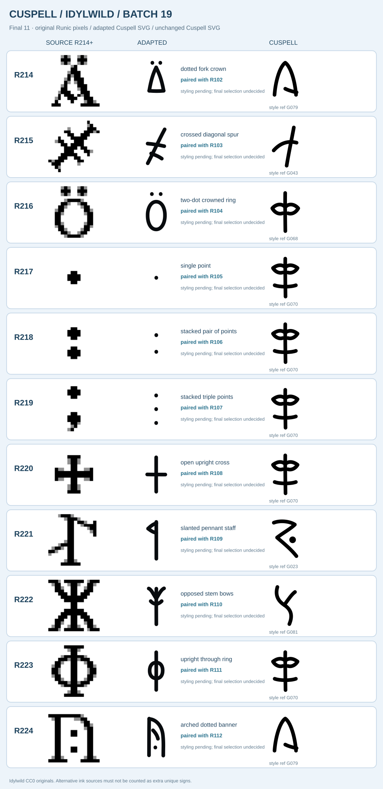
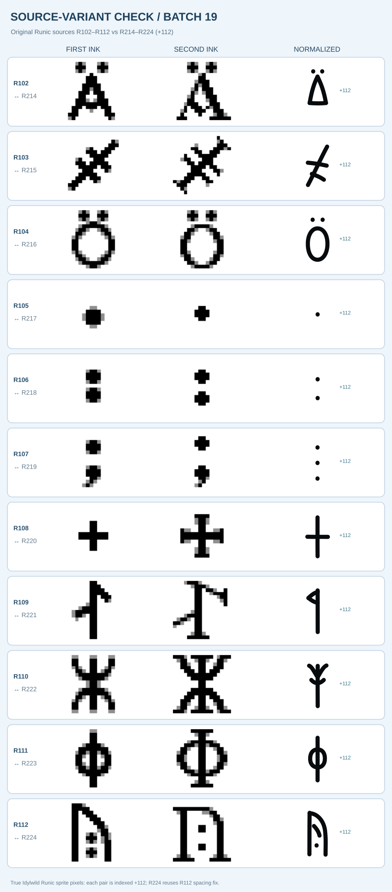

All 299 external sources are now represented; the user has not yet selected a final pool. These 11 records share approved contours with R102–R112. CC0 originals and provenance are retained.
Adapted glyph overview

Original / Adapted / Existing Cuspell

Original variant source pairings
